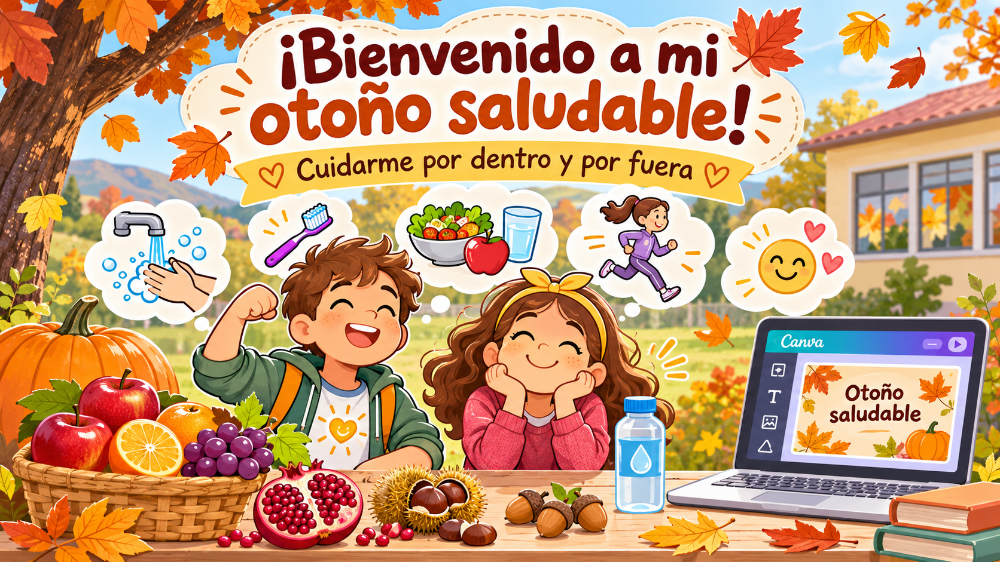

🍂 ¡Comienza nuestra aventura de otoño!
¡Hola, explorador! 👋
Vamos a descubrir muchas cosas sobre el otoño y aprender a cuidarnos por dentro y por fuera.
Durante esta aventura vamos a:
🍎 Conocer los alimentos del otoño.
🧼 Aprender hábitos saludables.
🍁 Descubrir los cambios de la naturaleza.
😊 Reconocer nuestras emociones.
💻 Utilizar herramientas digitales.
🎨 Crear nuestra presentación «Así ha sido mi otoño».
¿Estás preparado? ¡Comenzamos! 🚀